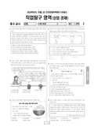

문제지

시험지 만들기준비하고 있어요. 열리면 아래 탭에서 바로 쓸 수 있어요.

시험지를 먼저 풀어 보세요. 점수와 인원 수치는 흐리게 가려 뒀어요.
| 등급 | 표준점수 이상 | 인원(명) | 비율 |
|---|---|---|---|
| 1 | 70 | 41 | 4.28% |
| 2 | 64 | 84 | 8.78% |
| 3 | 58 | 112 | 11.7% |
| 4 | 52 | 164 | 17.14% |
| 5 | 45 | 201 | 21% |
| 6 | 40 | 195 | 20.38% |
| 7 | 39 | 71 | 7.42% |
| 8 | 37 | 61 | 6.37% |
| 9 | 32 | 28 | 2.93% |
시·도교육청 공개 자료
출처: 시·도교육청이 공개한 전국연합학력평가 성적 분석·통계자료(공개 자료 보기).
EBSi 응답자 기준으로 가장 많이 틀린 문항은 17번(3점)이고, 오답률은 85.7%입니다. 상위 15문항 중 3문항은 정답보다 한 오답을 고른 사람이 더 많았습니다(17번: 정답 ② 14.3%, ① 42.9%). 오답률 50%를 넘은 문항은 10개입니다.
| 순위 | 문항 | 배점 | 오답률 | 정답 | 많이 고른 오답 |
|---|---|---|---|---|---|
| 1 | 17번 | 3점 | 85.7% | ② | ① 42.9% |
| 2 | 15번 | 3점 | 85.7% | ③ | ① 28.6% |
| 3 | 7번 | 3점 | 85.7% | ① | ② 42.9% |
| 4 | 4번 | 3점 | 71.4% | ⑤ | ② 28.6% |
| 5 | 20번 | 3점 | 57.1% | ② | ① 28.6% |
| 6 | 18번 | 3점 | 57.1% | ⑤ | ① 28.6% |
| 7 | 16번 | 3점 | 57.1% | ④ | ① 14.3% |
| 8 | 12번 | 3점 | 57.1% | ③ | ① 14.3% |
| 9 | 11번 | 3점 | 57.1% | ④ | ② 28.6% |
| 10 | 8번 | 3점 | 57.1% | ③ | ① 42.9% |
| 11 | 19번 | 2점 | 42.9% | ② | ① 14.3% |
| 12 | 13번 | 2점 | 42.9% | ① | ② 14.3% |
| 13 | 10번 | 2점 | 42.9% | ① | ③ 14.3% |
| 14 | 9번 | 2점 | 42.9% | ① | ② 14.3% |
| 15 | 3번 | 2점 | 42.9% | ⑤ | ④ 28.6% |
EBSi 가채점 응답자 기준 · 전 문항 중 오답률 상위 15문항
출처: EBSi 역대 등급컷·오답률 공개 화면. 가채점에 참여한 EBSi 이용자 응답이라 전체 응시자 정답률과는 다를 수 있습니다.
발행 기관: 시·도교육청(전국연합학력평가). 파일 위치: 이 사이트가 보관한 사본. 저작권은 발행 기관에 있습니다. 원본과 다르거나 게시 중단이 필요하면 연락처로 알려 주세요. 등급컷 출처 구분은 데이터 원칙에서 설명합니다.